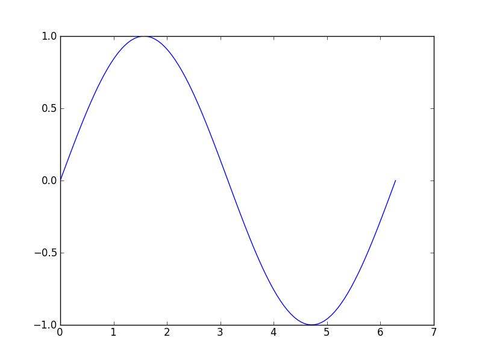

org-mode, “文学编程” , 自动化报告
Table of Contents
引言
“文学编程”，即 literal programming，最初是 knuth 提出的。我接触 literal programming 是从 阳志平 那里，进而了解了 yihui 的 knitr 。他们的目的主要是做 “自动化报告”，这个想法比 literal programming 更打动我。
为什么对这个感兴趣？因为平时做研究，要纪录结果，写报告、论文。研究的中间结果有很多都是程序计算的数据，然后绘成曲线、分布的图片，再插入到文档中。有时候要插入的图片很多，就显得繁琐。更不爽的是，插入到文档后，图片就和数据分离了。过一段时间后，很可能就不记得这条曲线是如何画的了。甚至要想修改某个参数，还要从头再走一次 修改参数－> 运行程序 －> 绘图 －> 插入 这一过程。而如果把这一过程和报告的生成合二为一，任何时候修改参数后都可以一次性生成最终的报告，就能够一劳永逸了。这就是“自动化报告”的意义。
自动化报告还有一层意义，即保证报告中的所有内容是完整的，可重复的，因此也称作“可重复性报告”。当读者拿到报告，不仅能够阅读内容，还能够复现其中的数据、结果。
自动化报告有两种实现方式，一种是所有的报告内容，包括文字、图，都用程序输出，有些软件的生成报告就是类似的形式；另外一种是报告的主题仍是文本，计算、绘图等相应的程序嵌入到报告中，在某个过程中运行报告中的程序代码段，生成结果和图片。Knitr 和 本文所说的 emacs org-mode 就属于后一种。
Knitr 和 org-mode
Knitr 是一个 R 程序包，其作用是将嵌入代码（主要是 R 代码）的某种格式的报告／文本（如 tex、markdown、html、等）处理成相应的标准格式文本，把其中的代码运行，将运行结果嵌入到文档的指定位置。
在 Knitr 之前也有一些软件进行了这方面的尝试，如 Sweave。Knitr 是这方面的后起之秀。
在试用、比较了 Knitr 和 org-mode 后，我选择了后者，理由是：
- Knitr 用 R 语言开发，所支持的语言也主要是 R。而我不会 R，习惯用 Python，在这方面 orgmode 支持更好。orgmode 支持的语言更多。
- Knitr 没有自己的编辑器，虽然 RStudio、LyX 等已经支持 knitr，但我对这些编辑器无爱。orgmode 生于 emacs，而emacs 是我最爱的编辑器。
- 用 Knitr 意味着要保存报告，用 knitr 处理后才能看到报告的结果（特别是其中的图片）。而用 orgmode，可以在写报告当中，直接在 emacs 内运行某段代码，直接看到结果（包括图片）。Knitr 要一次性处理完所有的代码段，而 Orgmode 可以只运行其中的任何一个片段。
- 更喜欢 orgmode 的标记格式。knitr 支持 markdown、tex、html 多种格式，但都不如 orgmode 顺手。
虽然说了不少 Knitr 的“坏话”，但不可否认 Knitr 是一个优秀的作品，对 Knitr 作者及其所在的 R 的圈子的开放和进取精神非常敬佩。
在 Org 文档中嵌入 Python 程序
我平时用的语言主要是 Python，因此下面用 Python 为例介绍配置和试用。
我用的 emacs 版本是 24.1, Org 用的 git pull 的，7.8.11 。Org 的 literate programming 支持是在 Babel 中。首先要打开对 Python 的支持（默认只支持 emacs-lisp）：
(org-babel-do-load-languages
'org-babel-load-languages
'((python . t)
(R . t)))
嵌入的 Python 代码要放在 #+begin_src 和 #+end_src 之间
#+begin_src python ... #+end_src
如果要运行这段程序，将光标停留在该代码段中，按 C-c C-c，即可执行。执行的结果放在该代码段后面的 #+results: 标记后。
快捷键
- 在一行的开头输入
<s=，然后按 TAB，就会自动插入 =#+begin_src和#+end_src。 - 在代码段内按 C-c '，就会打开一个buffer，在其中单独编辑该段代码。该buffer会应用相应的语言mode。编辑完成后再次按 C-c ' 返回 org。
Org-babel 对 python 程序支持两种运行模式：函数模式（functional mode）和 脚本模式（scripting mode）。函数模式下，只返回代码段的返回值（return的），脚本模式下，可以把中间过程(如 print 打印)都输出。脚本模式要设置代码段的头参数（header argument）：
:results output
注意 ':' 后面不能有空格
函数模式的头参数为：
:results value
输出及返回的结果插入到代码段后面的 #+results 后。如果想在 export org 文件（如输出到 html，pdf）时包含程序的输出，则要加上头参数： exports
函数模式的例子(:exports results value)：
a = 4 return a**4
256
脚本模式的例子，可以读写本地文件(:results output :exports both)：
print "hello", 4+7
3 + 2
print('bye')
f=open('ttt.tt','w')
f.write('hello')
f.close()
hello 11 bye
注意到上面的 '3+2' 没有显示，这需要交互模式(:results output :session :exports both)：
3+2
5
代码段还支持参数，如同定义函数，所定义的函数可以在任何地方调用（用 #+call）,如
return x*x
now use the souce block:
16
用 emacs org-mode 写可重复报告
绘图
其实可重复性报告中对程序的依赖主要是图。绘图的方式和正常的绘图没什么不同，还做不到像 Knitr 对 R 绘图那样方便的程度。目前的方式只能是显式的将图片存储到文件中，然后在正文中插入该图片。我用 python 绘图大多数都是用 matplotlib，如
import pylab as pl from numpy import sin, pi, linspace t = linspace(0, 2*pi, 100) pl.plot(t, sin(t)) pic = 'img/plot_test.png' pl.savefig(pic) print '#+caption: test python plot' print '[[./%s]]'%pic

test python plot
运行完代码，要手动将 #+results: 删除。然后按 C-c C-x v （1或2次）显示该图片。
表格
将程序的输出数据直接填充到表格中也是自动化报告的重要功能。这正好可以利用 Org 对表格的强大支持。例如：
import sys
sys.path.append('/Users/xxh/lib/site-packages')
import xxh.aerospace.sun_sync_orbit_env as ss
year = 2013
area = 0.53*0.56
eta = 0.148
def foo(alt, dlt):
sp = ss.SSOEnv(alt,dlt)
days,beta = sp.beta(1., year)
qq = [sp.qm_Yn(b) for b in beta]
NY = [q[0]*area*eta for q in qq]
qq = [sp.qm_Xp(b) for b in beta]
NX = [q[0]*area*eta for q in qq]
Nt1 = [NY[i]+2*NX[i] for i in xrange(len(beta))]
Nt2 = [3*NY[i] for i in xrange(len(beta))]
print '|%4.1f|%3.1f|N| %4.1f | %4.1f | %4.1f'%(alt, dlt,max(Nt1), min(Nt1), sum(Nt1)/len(Nt1))
print '| | |Y| %4.1f | %4.1f | %4.1f'%(max(Nt2), min(Nt2), sum(Nt2)/len(Nt2))
print '|--+--+--+--+--+--|'
print '|--+--+--+--+--+--|'
print '| alt/km | dlt | state | max power/W | min power/W | average power/W |'
print '|--+--+--+--+--+--|'
foo(800.,6.5)
foo(800.,8.5)
foo(800.,9.5)
foo(1000.,6.5)
| alt/km | dlt | state | max power/W | min power/W | average power/W |
|---|---|---|---|---|---|
| 800.0 | 6.5 | N | 70.9 | 56.6 | 65.4 |
| Y | 179.7 | 124.4 | 164.1 | ||
| 800.0 | 8.5 | N | 56.0 | 49.1 | 52.2 |
| Y | 121.8 | 84.6 | 101.7 | ||
| 800.0 | 9.5 | N | 49.2 | 44.3 | 46.6 |
| Y | 85.3 | 60.1 | 71.8 | ||
| 1000.0 | 6.5 | N | 71.1 | 59.0 | 66.4 |
| Y | 179.7 | 129.2 | 165.7 |
在 emacs 中的输出显示如下：
#+RESULTS: |--------+-----+-------+-------------+-------------+-----------------| | alt/km | dlt | state | max power/W | min power/W | average power/W | |--------+-----+-------+-------------+-------------+-----------------| | 800.0 | 6.5 | N | 70.9 | 56.6 | 65.4 | | | | Y | 179.7 | 124.4 | 164.1 | |--------+-----+-------+-------------+-------------+-----------------| | 800.0 | 8.5 | N | 56.0 | 49.1 | 52.2 | | | | Y | 121.8 | 84.6 | 101.7 | |--------+-----+-------+-------------+-------------+-----------------| | 800.0 | 9.5 | N | 49.2 | 44.3 | 46.6 | | | | Y | 85.3 | 60.1 | 71.8 | |--------+-----+-------+-------------+-------------+-----------------| | 1000.0 | 6.5 | N | 71.1 | 59.0 | 66.4 | | | | Y | 179.7 | 129.2 | 165.7 | |--------+-----+-------+-------------+-------------+-----------------|
完成报告后，可再输出成其他的格式，如 pdf、html、docbook 等 Org 支持的输出格式。